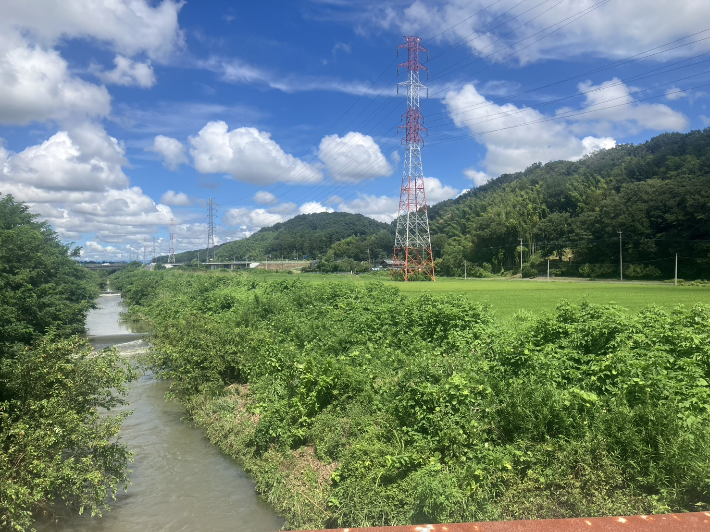
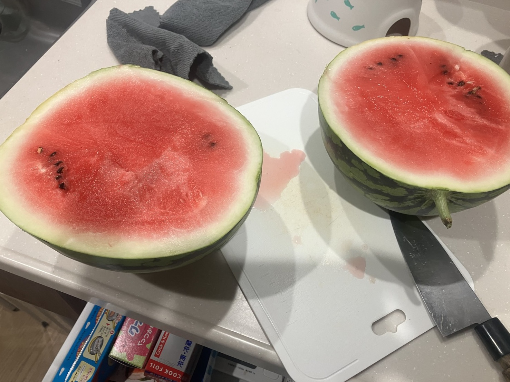
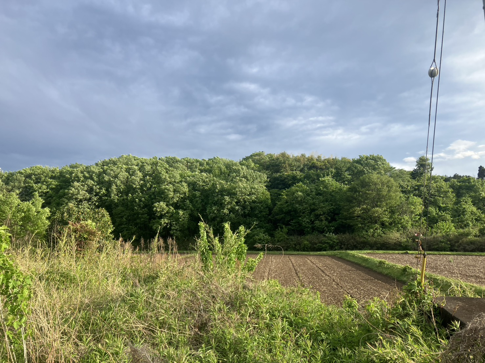
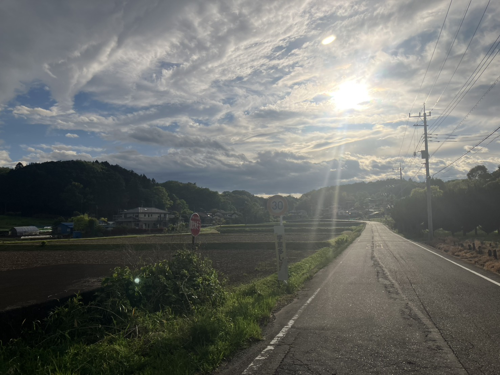
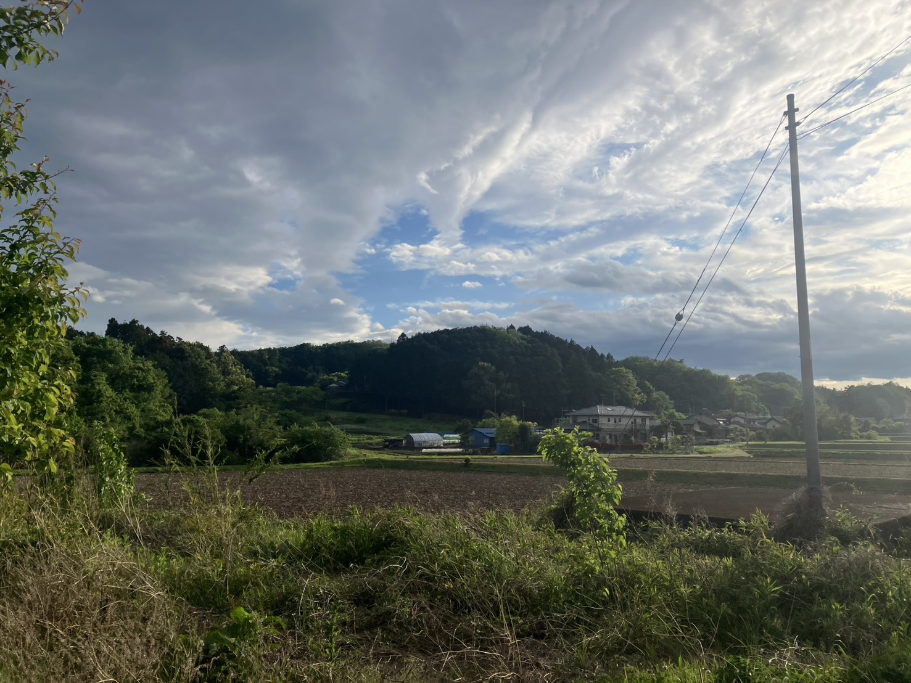

2026.08.15 | 終戦記念日


台風が抜けた翌朝、いつもの散歩道を歩いた。橋の上に立つと、市ノ川が濁っていた。普段は底の石が見えるほどの流れが、茶色く重たい水になって、音を立てて下っていく。ほんの数日前まで、静かな川だったはずである。
顔を上げれば、空はもう嘘のように晴れている。ただ、雲の輪郭が、少し前とは変わったように思う。真夏の入道雲は空の低いところで沸き立っていたが、この日の雲は、ずいぶん高いところを流れていた。夕方には、どこかでひぐらしが鳴いていた。八月十五日である。まだ暑い。それでも、秋はもう、山のほうから降りてきている。
散歩コースのヤギに子が生まれていたこと。数十年前に遊就館で読んだ、特攻に発つ前の若者たちの遺書のこと。そして夕方、八十近いご近所の方が、おぼつかない足取りで大きなスイカを運んでくださったこと。この日に考えたことを、少し長く書いた。
→ 続きを読む
夕雲のもと、田畑をめぐる
2026.04.27 | 春の夕



今日もまた、足の向くままに里を歩いた。新緑が日に日に厚みを増し、丘陵の稜線をやわらかく覆っている。耕されたばかりの田は、まだ水を湛えていない。黒々と濡れた土の畝が、そこに播かれるべき未来の稲穂を、静かに待っているようであった。
空には灰青の雲が幾重にも重なり、その隙間から斜めの光が差し込んでいる。散歩というささやかな営みが、これほどまでに豊かな景色を私に贈ってくれることを、私はしばしば忘れてしまう。歩くという行為は、目的地に至るための手段ではない。歩いている、その歩幅と呼吸のあいだに、世界がふと立ち現れる――そう言ったのは確か、あるフランスの哲学者であった。
「学童多し」と書かれた古びた標識のそばを通りすぎる。誰もいない田舎道に、それでもなお、子どもらの賑わいを思い出させる気配がある。場所には記憶があり、道には足跡が降り積もる。私は今、その堆積のうえを、ひとりの旅人のように歩いている。
生きているとは、おそらく、こうした夕雲の下に立ち、肺いっぱいに春の匂いを吸い込み、足の裏でアスファルトの温度を確かめている、その一瞬一瞬のことなのだろう。
帰途、空が淡い水色に変わるのを見た。雲は西へ流れ、私の影は長く伸びていた。歩けたこと、見えたこと、感じられたこと――この三つが揃った日は、それだけで、もう充分に幸福と呼んでよいのである。